Despliegue
Corre todo el partido: presiona la salida rival y siempre se ofrece como opción de pase.
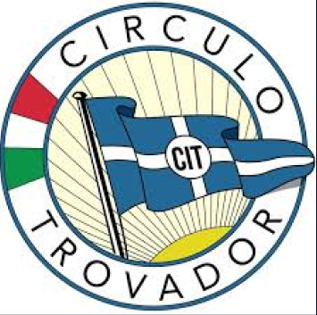
Círculo Trovador · Juveniles · 17 añosDelantero de área que no para de correr, con buen pie y físico para pelear cada pelota arriba.
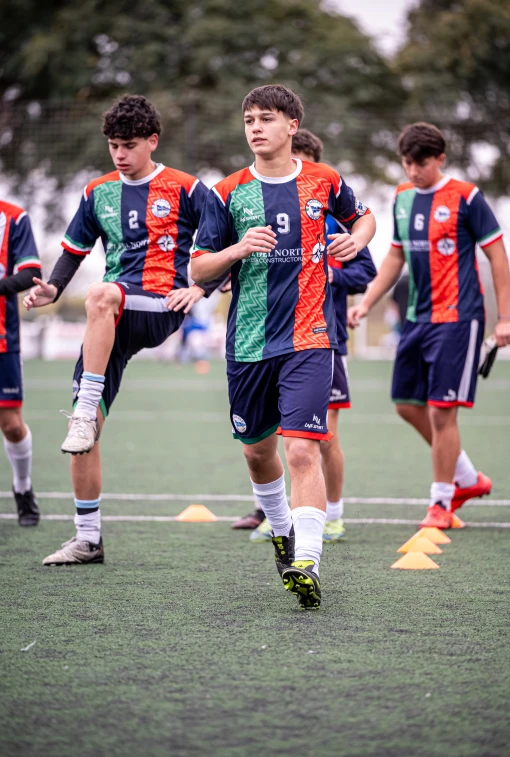
Promedio: 0,36 goles por partido · Participa en un gol cada 1,8 partidos
Corre todo el partido: presiona la salida rival y siempre se ofrece como opción de pase.
Técnica para controlar, descargar y definir con la pelota al pie.
Fuerte en el cuerpo a cuerpo para aguantar la marca y ganar duelos en el área.
Juveniles · Centrodelantero · Capitán · Temporada 2026: 22 PJ, 8 goles, 4 asistencias
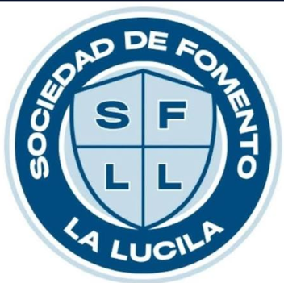
Sociedad de Fomento La LucilaFútbol 5 · Club anterior
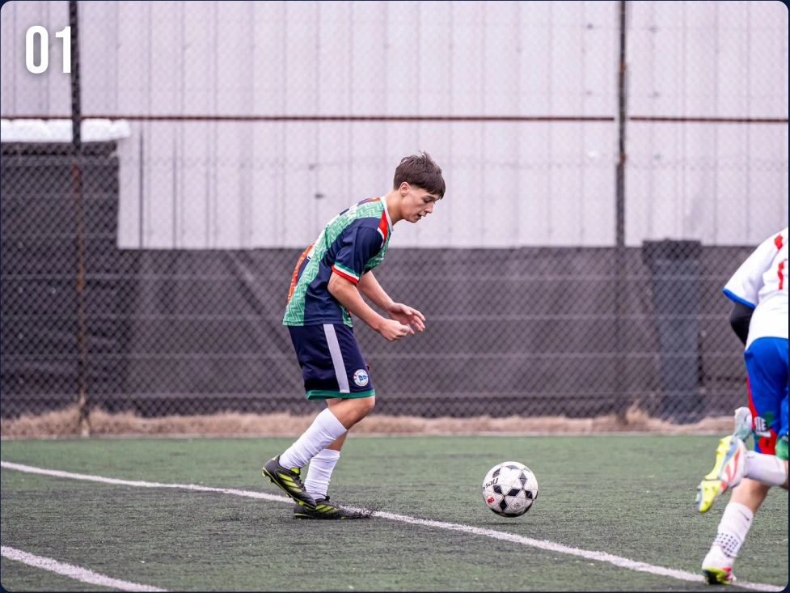
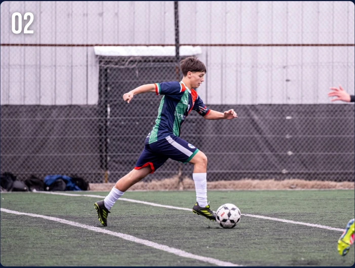
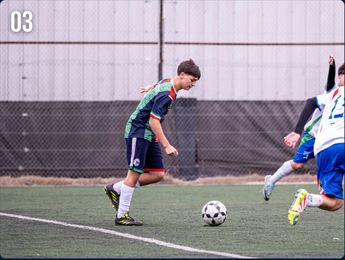
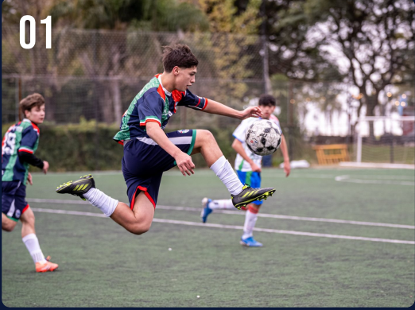
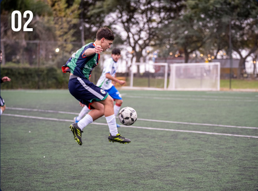
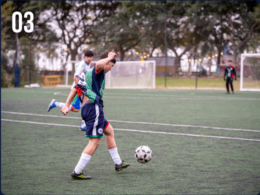
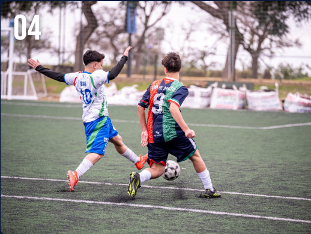
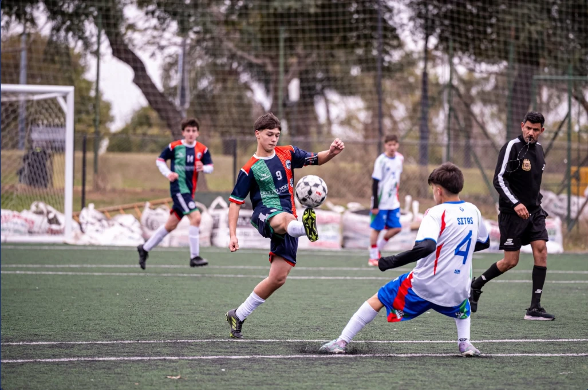
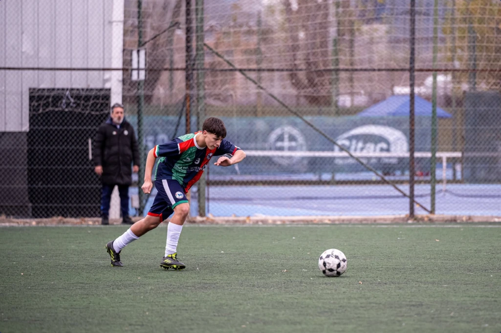
Capitán y 9 de Circulo Trovador. Si buscás un delantero para tu equipo, escribime.
Escribime por Instagram Instagram @nachoobourdieu